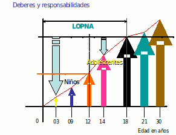

Tus Derechos y Deberes según la LOPNA
La Ley Orgánica para la Protección del Niño y del Adolescente o LOPNA, es una ley orgánica que tiene por objeto, garantizar a todos los niños y adolescentes, que se encuentren en el territorio de la República Bolivariana de Venezuela, el disfrute pleno y efectivo de sus derechos y garantías que a través de la Protección Integral que el Estado, la familia y la Sociedad deben brindarle desde el momento de su concepción.
Derecho a la sobrevivencia
Vida: Art. 15
Nivel de Vida: Art. 30
Familia: Arts. 25, 26 y 27 (Conocer a los padres, ser criado en una familia y mantener relaciones personales con los padres)
Salud: Arts. 41 al 51 (Salud, responsabilidad de padres y responsables, información, protección a la maternidad, vínculo materno filial, lactancia, vacunas, atención de emergencia, permanencia de padres y responsables en centros de salud, salud sexual y reproductiva, protección contra sustancias alcohólicas y psicotrópicas)
Seguridad social: Art. 52
Derecho al desarrollo
Educación: Arts. 53 al 61 (Educación, obligación de los padres y responsables, participación en el proceso educativo, respeto por los educadores, disciplina escolar, educación y trabajo, educación para niños trabajadores, educación para niños indígenas, educación para niños con necesidades especiales)
Información: Art. 68 (Recibir, buscar y utilizar información)
Educación y cultura de las minorías: Art. 36 y 60 (propia cultura, idioma y religión)
Descanso, recreación, esparcimiento, deporte y juego: Arts. 63 y 64 (Ejercicio de acuerdo con necesidades e intereses. Obligaciones del Estado)
 Derecho a la protección especial
Derecho a la protección especial
Protección a la integridad personal: Arts. 32, 38 y 89 (Protección contra cualquier forma de maltrato, explotación, abuso, negligencia, prohibición de esclavitud, servidumbre o trabajo forzoso y trato digno y humanitario para los privados de libertad)
Protección contra el traslado ilícito: Art. 40
Protección contra sustancias psicoactivas: Art. 51
Vida privada: Arts. 65 y 66 (honor, reputación, propia imagen e inviolabilidad del hogar y la correspondencia)
Protección en el trabajo: Tít. II - Capítulo III (arts. 94 a 116)
Derecho a la participación
Participación y asociación: Arts. 81 al 84 (Participar, reunirse, manifestar, libre asociación)
Opinión: Arts. 80, 85 al 87 (Opinar y ser oído sobre asuntos que le conciernen, petición ante autoridad o funcionarios públicos, defender sus derechos, solicitar justicia)
Expresión: Art. 67 (Expresión libre de opinión y difusión de información sin censura previa)
Libertad de pensamiento, conciencia y religión: Art. 35 (Orientación para el ejercicio del derecho)
Deberes y Responsabilidades
Honrar a la Patria y sus símbolos
Respetar, cumplir y obedecer el ordenamiento jurídico
Respetar los derechos y garantías de las demás personas
Honrar, respetar y obedecer a los padres o responsables
Ejercer y defender activamente sus derechos
Cumplir las obligaciones en materia de educación
Respetar y cumplir las normas y reglamentos de las organizaciones, o agrupaciones a las cuales pertenece
Respetar la diversidad de conciencia, pensamiento, religión y culturas
Conservar el medio ambiente
Cualquier otro deber establecido en la Ley
Aun siendo menor de 18 años a medida que creces, la responsabilidad sobre tus actos también aumenta.
Por ejemplo, un niño de 9 años no será tratado igual por las autoridades que un joven de 14 años, aunque hayan cometido la misma falta.